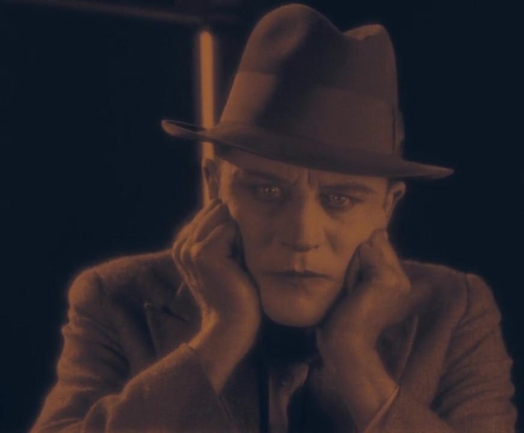

The Lodger: A Story of the London Fog, frame at 1:02:04
Alfred Hitchcock · 1927 · Silent film, tinted in this copy (frame)
Free to use
The script was meant to leave the lodger's innocence in doubt, but once Ivor Novello was cast the studio insisted he be shown to be innocent. Shooting began on 25 February 1926 and took six weeks, on a budget of 12,000 pounds. The producer Michael Balcon nearly shelved the finished film, and Ivor Montagu was brought in to rework the title cards and reshoot a few scenes. It was Hitchcock's third feature and the earliest to survive intact.